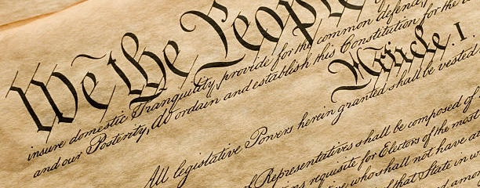

star star star star star star star star star star star star star star star star star star star star star star star star star star star star star star star star star
star star star star star star star star star star star star star star star star star star star star star star star star star star star star star star star star star
~ History of Constitution~

The U.S. Constitution was officially written on September 17th, 1787, by a group of state delegates after months of intense debate and negotiation. This colossal achievement marked a successful attempt to create a government “by the people” for the newly independent nation. However, before this official document came the Articles of Confederation.
While the Articles of Confederation served as the nation’s first constitution, it was very quickly determined that it would not be sufficient enough to govern a new and developing country. There was a lack of central authority, an inability to levy taxes, and other issues that caused major conflicts among the people. Recognizing these weaknesses in the states, delegates from across the East Coast gathered at the Constitutional Convention in Philadelphia in 1787. After many debates and proposals, they ultimately drafted the U.S. constitution, which aimed to create a stronger federal government while preserving the people’s rights.
The new Constitution established a checks and balances system among three branches of government: the executive, legislative, and judicial branches. Such a system was designed to ensure that all three branches have equal power, with none being more powerful than the others. The original Constitution was not fully supported by the people, so it wasn’t passed. There existed the Federalists who supported the Constitution, and the Anti-Federalists, who feared it gave the government too much power. To further address these concerns over individual liberties, the Bill of Rights was created, leading to the Constitution’s ratification by all thirteen states by 1790.
Today, the U.S. Constitution remains the world’s oldest written national constitution still in use. It is an ever evolving piece of legislation that will hopefully forever protect the fundamental rights and wants of the people, “for the people.”